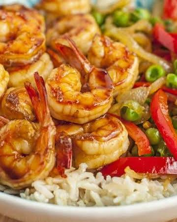

A sweet, savory, and incredibly fast meal that is perfect for busy nights. Crisp vegetables and tender shrimp are tossed in a glossy, flavorful glaze that pairs perfectly over a bowl of steaming rice